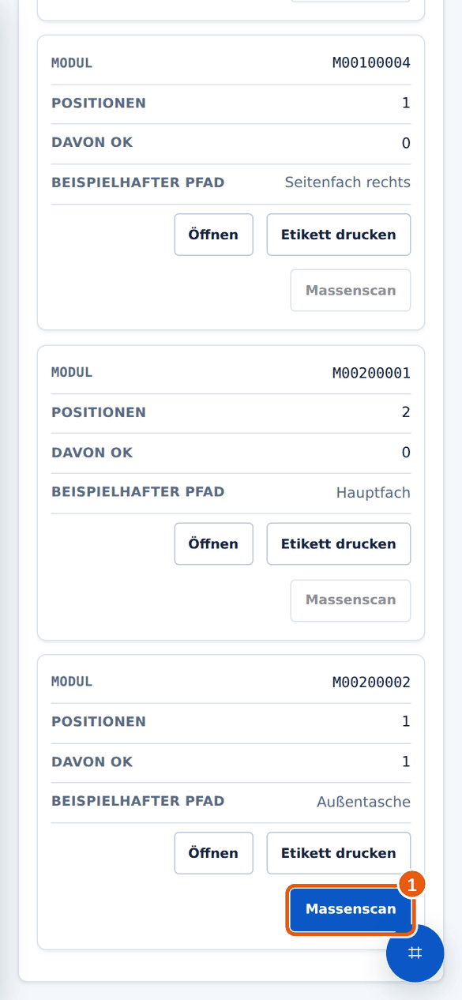
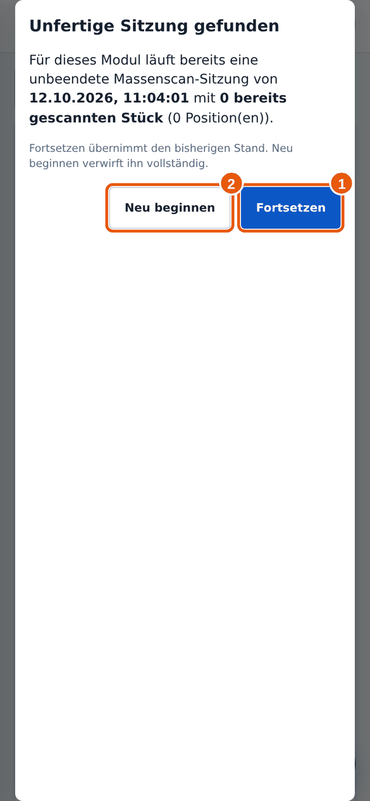
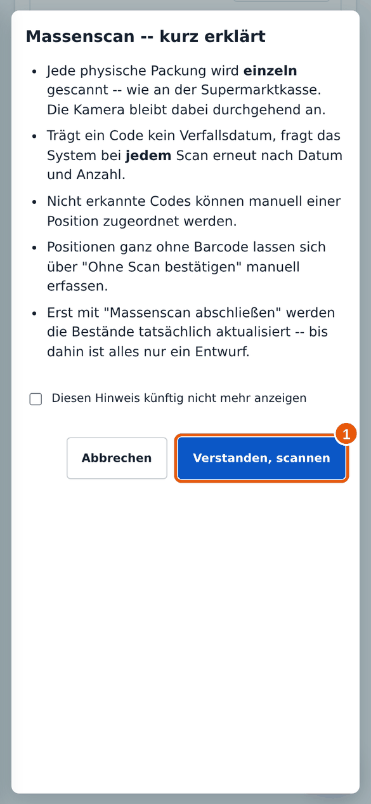
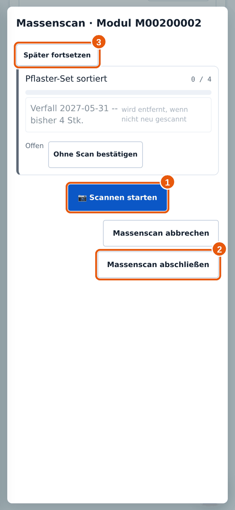
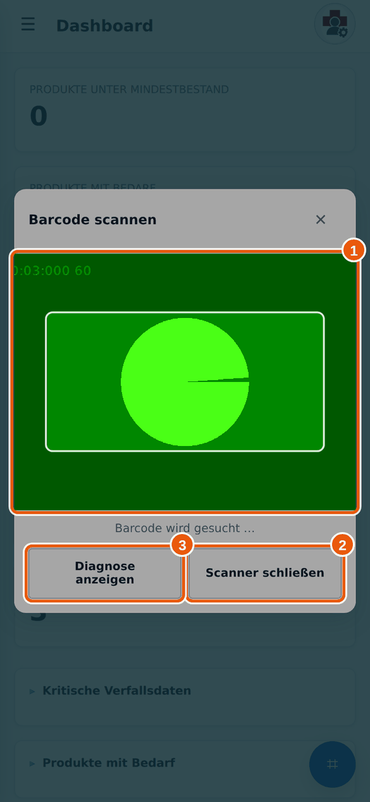

Anleitung 4.2
4.2Massenscan durchführen
Wann brauchst du das? Du hast die Hinweise unter „Massenscan: wann und warum“ gelesen und alle Packungen des Moduls vor dir.
Kurz gesagtReiter Module → beim Modul auf Massenscan → Hinweis lesen → Scannen starten → alle Packungen scannen → Massenscan abschließen → Vorschau prüfen → Abschließen.
✔Das brauchst du vorher
- Die Kamera ist erlaubt (siehe Wenn der Scanner nicht funktioniert).
- Gute Beleuchtung und alle Packungen griffbereit.
→So geht’s
- Öffne Einsatzpositionen und tippe auf den Reiter Module. Suche das Modul mit seiner Nummer und tippe auf Massenscan 1.

1 Massenscan. Ist er grau, ist das Modul nicht freigegeben. - Gibt es noch einen unfertigen Entwurf, fragt Milan nach. Fortsetzen übernimmt den bisherigen Stand 1, Neu beginnen verwirft ihn 2.

1 Fortsetzen, 2 Neu beginnen. - Lies die kurze Erklärung und tippe auf Verstanden, scannen 1. Wenn du den Hinweis nicht mehr sehen willst, setze vorher den Haken.

1 Verstanden, scannen. - Du siehst die Liste der Positionen des Moduls mit „gescannt / Soll“. Tippe auf Scannen starten 1.

1 Scannen starten, 2 Abschließen, 3 Später fortsetzen. - Die Kamera bleibt an. Halte nacheinander jede Packung mit ihrem Code in den Rahmen. Milan ordnet sie der richtigen Position zu und zählt hoch.

Das Scan-Fenster. Im Beispiel zeigt eine Testkamera nur ein Muster, bei dir siehst du das Kamerabild.
Wenn etwas nicht automatisch klappt
| Situation | Was du tust |
|---|---|
| Der Code enthält kein Verfallsdatum | Milan fragt bei jedem Scan nach Datum und Anzahl. Trage beides ein und tippe auf Übernehmen. |
| „Code nicht erkannt“ | Wähle selbst aus der Liste, zu welcher Position die Packung gehört, oder verwirf den Scan. |
| Packung hat gar keinen Code | Tippe bei der Position auf Ohne Scan bestätigen und trage Anzahl und Datum von Hand ein. |
| „Sollbestand bereits erreicht“ | Es liegen mehr Stück im Modul als vorgesehen. Milan fragt, welche Packungen im Modul bleiben und welche als Rückläufer zurück ins Lager gehen. Ordne sie zu und tippe auf Fertig. |
| Mengen müssen korrigiert werden | Mit − und + bei der jeweiligen Charge in der Liste. |
Abschließen
- Sind alle Packungen gescannt, tippe auf Massenscan abschließen 2. Milan zeigt eine Vorschau „Vor dem Abschluss prüfen“.
- Prüfe die Vorschau. Nicht gewollte Änderungen kannst du abwählen. Tippe dann auf Abschließen. Erst jetzt ändert sich der Bestand.
- Hast du Rückläufer, fragt Milan, ob sie ins Lager eingebucht werden sollen. Wähle die Packungen aus und tippe auf Einbuchen, oder überspringe den Schritt.
Zwischendurch unterbrechen
Mit Später fortsetzen 3 verlässt du den Massenscan. Der Entwurf bleibt erhalten, der Bestand ändert sich nicht. Mit Massenscan abbrechen verwirfst du alles.
Ich habe versehentlich eine Packung doppelt gescannt.
Korrigiere die Menge der Charge in der Liste mit −. Bemerkst du es erst in der Vorschau, wähle die Änderung ab oder gehe zurück.
Die Kamera startet nicht.
Ich habe etwas vergessen zu scannen und schon abgeschlossen.
Melde dich beim Materialwart. Nicht gescannte Chargen wurden mit dem Abschluss entfernt und müssen neu erfasst werden.